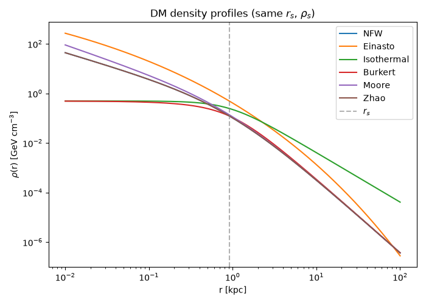
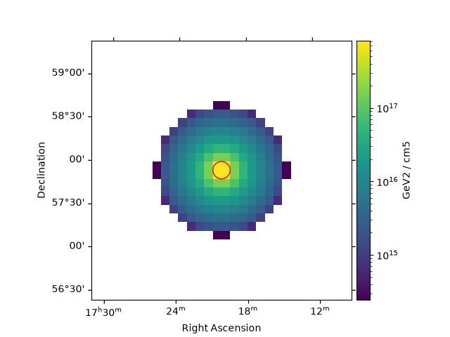
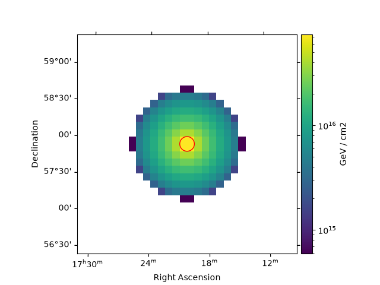
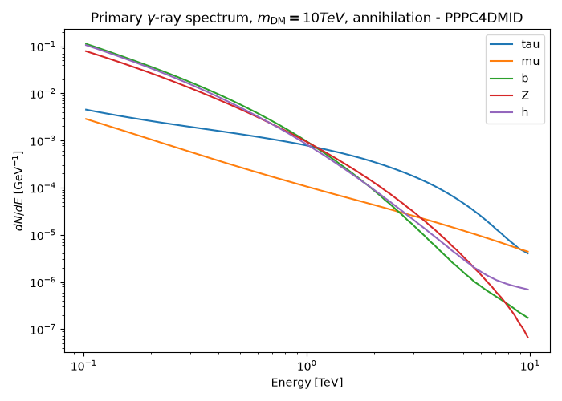
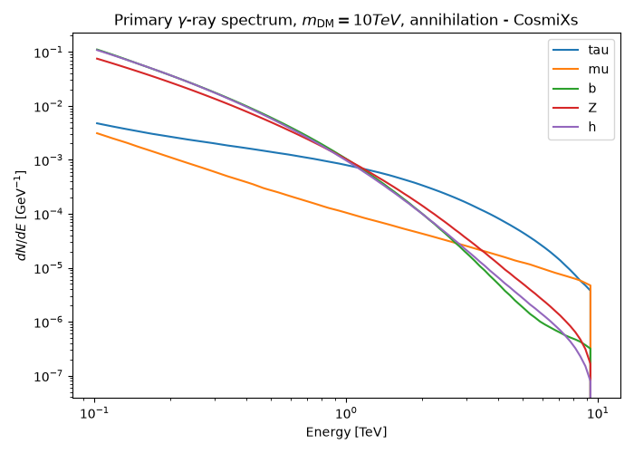
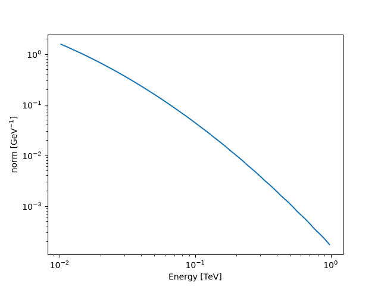
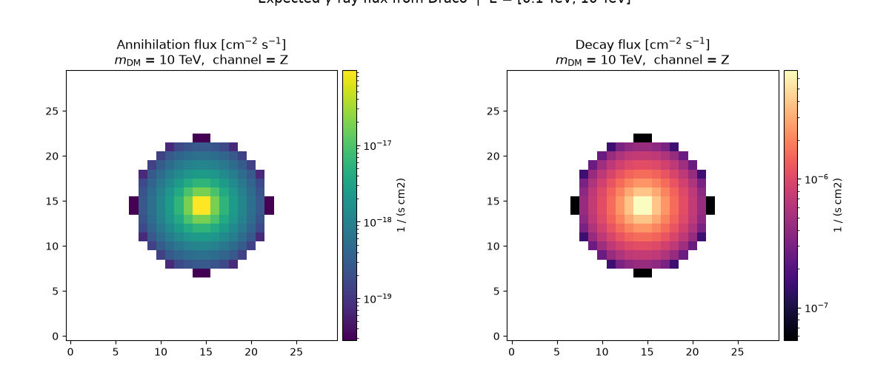

Note
Go to the end to download the full example code or to run this example in your browser via Binder.
Dark Matter Indirect Detection with Gammapy: Basics#
Weakly Interacting Massive Particles (WIMPs) are among the most compelling candidates for Dark Matter (DM). If they exist, WIMPs can annihilate or decay into Standard Model particles — including gamma rays — that can be detected by gamma-ray instruments such as space-based telescopes (e.g. Fermi-LAT) or ground-based Imaging Atmospheric Cherenkov Telescopes (IACTs) like MAGIC, HESS, VERITAS, or the upcoming CTA Observatory.
The expected gamma-ray flux from a DM source has two independent components:
Astrophysical factor (J/D-factor): encodes the spatial distribution of DM along the line of sight. It depends on the assumed density profile and the source distance. J-Factor stands for annihilation and D-Factor for the decay approach.
Particle physics factor (dN/dE): encodes the gamma-ray energy spectrum produced per annihilation or decay event. It depends on the DM mass and the dominant interaction channel.
The total flux is simply their product (Bergström, L. et al., 1998):
Annihilation:
Decay:
where \(m_\chi\) is the DM particle mass, \(\langle\sigma v\rangle\) is the velocity-averaged annihilation cross-section, \(\tau_\chi\) is the decay lifetime, \(J\) and \(D\) are the J-factor and D-factor (line-of-sight integrals of \(\rho^2\) and \(\rho\), respectively, over the region of interest), \(dN/dE\) is the differential photon spectrum per annihilation/decay event, and \(E_{\rm min}\), \(E_{\rm max}\) are the integration energy bounds.
In this tutorial, we cover the building blocks needed to model this signal in Gammapy, using the Draco dwarf spheroidal galaxy as our example target — one of the most DM-dominated objects in the local universe and a standard benchmark for indirect detection searches.
Setup#
As usual, we’ll start with some setup uploading all the necessary packages for this tutorial.
import numpy as np
import matplotlib.pyplot as plt
from matplotlib.colors import LogNorm
import astropy.units as u
from astropy.table import Table
from astropy.coordinates import SkyCoord
from gammapy.maps import WcsGeom, WcsNDMap, RegionGeom
from gammapy.astro.darkmatter import (
JFactory,
PrimaryFlux,
profiles,
DarkMatterSpectralModel,
add_factor_prior,
)
from regions import CircleSkyRegion
Define the target of interest for this tutorial:
position_dwarf_draco = SkyCoord(260.05, 57.915, frame="icrs", unit="deg")
distance_dwarf_draco = 76 * u.kpc
Spatial distribution#
To calculate the expected gamma-ray flux from DM, we first need to understand its spatial distribution.
For Dark Matter annihilation, we use the J-Factor. It represents the astrophysical component of the flux and is the integral of the DM density squared (\(\rho^2\)) along the line of sight (\(l\)) integrated over a solid angle (\(\Delta \Omega\)), since it requires two particles to collide:
For Dark Matter decay, we use the D-Factor. This depends linearly on the density (\(\rho\)), as it involves single particles decaying spontaneously:
The calculation procedure in Gammapy is nearly identical for both cases;
you only need to toggle a single parameter (annihilation = True or
False) to switch between them.
In this section, we define the spatial parameters for the Draco dwarf spheroidal galaxy, describing the different density profiles availables and how to calculate the astrophysical factors.
Density profiles#
The spatial distribution of DM within a halo is described by a density profile ρ(r). Different theoretical models and observational fits predict different shapes, particularly in the inner regions of the halo. The choice of profile is one of the dominant systematic uncertainties in DM indirect detection searches.
The current implemented profiles in Gammapy are: Burkert, Einasto, Isothermal, Moore, NFW and Zhao.
Each profile is characterized by two scale parameters fitted to observations:
r_s (scale radius): the characteristic distance at which the profile changes slope.
rho_s (scale density): the overall normalization of the profile, setting the total amount of DM in the halo.
Below we set up the shape of each available profile.
# Common parameters for comparison
r_s = 0.91 * u.kpc # Scale radius
rho_s = 1.3e7 * (u.M_sun / u.kpc**3) # Scale density
rho_s_GeV = rho_s.to(u.GeV / u.cm**3, equivalencies=u.mass_energy()) # Units conversion
# Define radial range for the plot
r = np.logspace(-2, 2, 200) * u.kpc
# Available profiles
profile_list = {
"NFW": profiles.NFWProfile(r_s=r_s, rho_s=rho_s_GeV),
"Einasto": profiles.EinastoProfile(r_s=r_s, rho_s=rho_s_GeV),
"Isothermal": profiles.IsothermalProfile(r_s=r_s, rho_s=rho_s_GeV),
"Burkert": profiles.BurkertProfile(r_s=r_s, rho_s=rho_s_GeV),
"Moore": profiles.MooreProfile(r_s=r_s, rho_s=rho_s_GeV),
"Zhao": profiles.ZhaoProfile(r_s=r_s, rho_s=rho_s_GeV),
}
Here we show a plot for the available profiles:
fig, ax = plt.subplots(figsize=(7, 5))
for name, profile in profile_list.items():
rho = profile(r)
ax.plot(r.value, rho.to("GeV cm-3").value, label=name)
ax.set_xscale("log")
ax.set_yscale("log")
ax.set_xlabel("r [kpc]")
ax.set_ylabel(r"$\rho$(r) [GeV cm$^{-3}$]")
ax.set_title("DM density profiles (same $r_s$, $\\rho_s$)")
ax.axvline(r_s.value, color="gray", linestyle="--", alpha=0.6, label="$r_s$")
ax.legend()
plt.tight_layout()
plt.show()

Astrophysical factor#
Now we are going to calculate the target source J-Factor and D-Factor. For this example we will use an Einasto profile. The steps to follow are:
Set a geometry map of the source, acting as a canvas of the sky region we want to study, specifying its center, angular size, and pixel resolution.
Compute the JFactor/DFactor using the JFactory class. It is possible to plot the results and also to integrate the factor in a desired region of interest, since not all telescopes have the same angular resolution and DM halos are extended objects. Additionally, to optimize our observation, we would like to know how much DM signal is contained within a specific angular radius from the center of the galaxy.
It should be highlighted that the astrophysical factor can be computed with another tools and one can use the final value (scalar value) within Gammapy, this is just an example if one wants to calculate it within this framework.
# Define the DM profile. Check profiles.DMProfile.__subclasses__() for more profiles
draco_profile = profiles.EinastoProfile(r_s=0.91 * u.kpc, rho_s=rho_s_GeV)
# Geometry map we are going to work with
geom_draco = WcsGeom.create(
binsz=0.1, skydir=position_dwarf_draco, width=3.0, frame="icrs"
)
J-Factor#
We compute the J-Factor with the
compute_jfactor() function. Here
we set annihilation to be True, since we are computing the J-Factor.
jfactory = JFactory(
geom=geom_draco, # Geometry map
profile=draco_profile, # Chosen density profile
distance=distance_dwarf_draco, # Target distance
annihilation=True, # Set if it is annihilation (true) or decay (false)
rmax=1
* u.kpc, # Physical size of the dark matter halo in kpc. We set 1 just as an example
)
# Computation of the J factor
jfact_draco = jfactory.compute_jfactor()
# Map construction for plotting
jfact_map_draco = WcsNDMap(
geom=geom_draco, data=jfact_draco.value, unit=jfact_draco.unit
)
plt.figure()
ax = jfact_map_draco.plot(cmap="viridis", norm=LogNorm(), add_cbar=True)
# Define a region of interest (i.e., 0.1 deg circle)
sky_reg = CircleSkyRegion(center=position_dwarf_draco, radius=0.1 * u.deg)
region_geom = RegionGeom(sky_reg, wcs=geom_draco.wcs)
region_geom.plot_region(
ax=ax, facecolor="none", edgecolor="red", label="0.1 deg circle"
)
mask = geom_draco.region_mask([sky_reg])
# Integration of JFactor within that region
total_jfact = (mask.data * jfact_draco).sum()
print(f"J-factor integrated on 0.1 deg circle: {total_jfact:.3g}")

J-factor integrated on 0.1 deg circle: 3.31e+18 GeV2 / cm5
D-Factor#
Next, we calculate the expected density of Dark Matter along the line of
sight assuming decay rather than annihilation. We follow the same
procedure for the D-Factor, but setting the parameter annihilation
to False.
dfactory = JFactory(
geom=geom_draco,
profile=draco_profile,
distance=distance_dwarf_draco,
annihilation=False, # Set for decay
rmax=1 * u.kpc,
)
# Compute D factor
dfact_draco = dfactory.compute_jfactor()
# Map construction for plotting
dfact_map_draco = WcsNDMap(
geom=geom_draco, data=dfact_draco.value, unit=dfact_draco.unit
)
plt.figure()
ax = dfact_map_draco.plot(cmap="viridis", norm=LogNorm(), add_cbar=True)
# Define a region of interest (i.e., 0.1 deg circle)
sky_reg = CircleSkyRegion(center=position_dwarf_draco, radius=0.1 * u.deg)
region_geom = RegionGeom(sky_reg, wcs=geom_draco.wcs)
region_geom.plot_region(
ax=ax, facecolor="none", edgecolor="red", label="0.1 deg circle"
)
mask = geom_draco.region_mask([sky_reg])
# Integration of DFactor within that region
mask = geom_draco.region_mask([sky_reg])
total_dfact = (mask.data * dfact_draco).sum()
print(f"D-factor integrated on 0.1 deg circle: {total_dfact:.3g}")

D-factor integrated on 0.1 deg circle: 2.98e+17 GeV / cm2
Nuisance parameter: J/D-factor#
By default, the astrophysical factor is not computed with any
uncertainty, but it can be treated as a nuisance parameter with
astrophysical uncertainty, rather than a free spectral model parameter —
this avoids the degeneracy between scale and the astrophysical
factor (in log) (both scale the flux linearly).
The model uses
jfactor=1by default → flux per unit J-factor.scale(\(\langle\sigma v\rangle\) or \(1 / \tau_\chi\)) is the only free model parameter.The J/D-factor uncertainty is added externally via
add_factor_prior(), a log-normal prior term on the likelihood. This should be used once the spectral model is set (DarkMatterSpectralModel). Check the next subsections for details.
Spectral distribution#
The second component of our model is governed by particle physics. When WIMPS annihilate (or decay), they produce Standard Model particles that eventually annihilate, decay or hadronize into gamma rays.
The energy spectrum of these gamma rays, dN/dE, depends on two quantities:
The DM mass (\(m_\chi\)): sets the maximum energy of the photons, since \(E_{\rm max}\) = (\(m_\chi\)) for annihilation (or (\(m_\chi\))/2 for decay).
The annihilation/decay channel: determines the shape of the spectrum. Different final states (quarks, leptons, gauge bosons) produce different gamma-ray spectra through different annihilation, decay and hadronization chains.
Gammapy implements these spectra via look-up tables from three sources:
PPPC4DMID (Cirelli et al. 2011): tables computed with PYTHIA for a wide range of masses and channels, including electroweak corrections. This is the standard reference for most indirect detection analyses.
CosmiXs (Arina et al. 2023): more recent tables with updated Monte Carlo generators, particularly relevant at high masses (above ~100 TeV) where PPPC4DMID may be less accurate.
Custom file: a custom spectral table can be provided either as a path to a local file (in any format readable by
astropy.table.Table.read, e.g.ecsv,fits,csv,dat) or directly as aastropy.table.Tableobject. This table must contain amDMcolumn, aLog[10,x]column, and one column per desired channel. If the column names in your file don’t match these expected names, amapping_dictmust be provided to map them accordingly.
Currently, the default source is PPPC4DMID.
The PrimaryFlux class in Gammapy
interpolates these tables and returns dN/dE as a spectral model that can
be directly combined with the astrohysical factor to compute the
expected flux (as shown in the next section).
Please note that for the decay, the procedure is the same, but internally the mass is divided by 2.
Here we plot the primary gamma-ray spectrum for a 10 TeV DM particle annihilating into several typical channels.
Example with PPPC4DMID#
In this subsection we are going to show the spectra obtained for a mass for different annihilation channels using PPPC4DMID as a source.
# Define the DM mass and channels of interest
mDM = 10.0 * u.TeV
channels = ["tau", "mu", "b", "Z", "h"]
# To see all available channels: print(PrimaryFlux(mDM=mDM, channel="b").allowed_channels)
fig, ax = plt.subplots(figsize=(7, 5))
for channel in channels:
fluxes = PrimaryFlux(mDM=mDM, channel=channel)
fluxes.plot(
energy_bounds=[mDM / 100, mDM],
ax=ax,
label=channel,
yunits=u.Unit("1/GeV"),
)
ax.set_yscale("log")
ax.set_xlabel("Energy [TeV]")
ax.set_ylabel(r"$dN/dE$ [GeV$^{-1}$]")
ax.set_title(
rf"Primary $\gamma$-ray spectrum, $m_{{\rm DM}} = {mDM:.0f}$, annihilation - PPPC4DMID"
)
ax.legend()
plt.tight_layout()
plt.show()

Example with CosmiXs#
To change to CosmiXs source, it must be set into the Primary Flux class with an homonymous parameter.
mDM = 10.0 * u.TeV
channels = ["tau", "mu", "b", "Z", "h"]
fig, ax = plt.subplots(figsize=(7, 5))
for channel in channels:
fluxes = PrimaryFlux(
mDM=mDM,
channel=channel,
source="cosmixs", # Source parameter
)
fluxes.plot(
energy_bounds=[mDM / 100, mDM], ax=ax, label=channel, yunits=u.Unit("1/GeV")
)
ax.set_yscale("log")
ax.set_xlabel("Energy [TeV]")
ax.set_ylabel(r"$dN/dE$ [GeV$^{-1}$]")
ax.set_title(
rf"Primary $\gamma$-ray spectrum, $m_{{\rm DM}} = {mDM:.0f}$, annihilation - CosmiXs"
)
ax.legend()
plt.tight_layout()
plt.show()

Example with a custom file#
To use a custom file source we must define a path to the file or an astropy.table.Table with the aforementioned format or along with a mapping dictionary.
# Minimal custom spectral table with the expected column names:
# mDM, Log[10,x], and one column per channel
masses = [10, 100, 1000, 10000] # GeV
log10x = np.linspace(-6, 0, 50)
rows = []
for m in masses:
for lx in log10x:
x = 10**lx
rows.append(
{
"mDM": m,
"Log[10,x]": lx,
"b": np.exp(-((lx + 1) ** 2)) / x, # toy dN/dlog10x values
r"\[Tau]": np.exp(-((lx + 1.5) ** 2)) / x,
}
)
custom_table = Table(rows=rows)
Here by default the table is written in the tutorial container folder, please change the route as you wish
custom_table.write("custom_spectra.ecsv", overwrite=True)
custom_table
mDM = 1.0 * u.TeV
fluxes_custom = PrimaryFlux(
mDM=mDM,
channel="b",
source="custom_spectra.ecsv",
)
fluxes_custom.plot(energy_bounds=[mDM / 100, mDM], yunits=u.Unit("1/GeV"))
plt.show()

Loading the table as a Table object
table = Table.read("custom_spectra.ecsv")
print(table)
fluxes_from_table = PrimaryFlux(mDM=mDM, channel="tau", source=table)
# Example of use of mapping dictionary
# Suppose your file follows naming convention instead
# (DM, Log10[x], dNdLog10x[tau], ...)
# fluxes_mapped = PrimaryFlux(
# mDM=mDM,
# channel="tau",
# source="cosmixs_style_table.ecsv",
# mapping_dict={
# "DM": "mDM",
# "Log10[x]": "Log[10,x]",
# "dNdLog10x[tau]": "\\[Tau]",
# },
# )
mDM Log[10,x] b \[Tau]
----- -------------------- ---------------------- ---------------------
10 -6.0 1.3887943864964022e-05 0.0016052280551856117
10 -5.877551020408164 3.511287822521341e-05 0.00359075937646435
10 -5.755102040816326 8.615321726790191e-05 0.00779493426158445
10 -5.63265306122449 0.00020514132771041162 0.01642158991543198
10 -5.510204081632653 0.0004740360993259886 0.03357333935280614
10 -5.387755102040816 0.0010630318126632651 0.06661169269980317
10 -5.26530612244898 0.002313437117652219 0.12825756527775967
10 -5.142857142857143 0.0048859129936470016 0.23965809614930464
10 -5.020408163265306 0.010014063722332859 0.4345880802393771
10 -4.8979591836734695 0.019918267666020496 0.7647863146030202
... ... ... ...
10000 -1.1020408163265305 12.51753457495884 10.795951941914266
10000 -0.9795918367346941 9.536981848810955 7.277365421734672
10000 -0.8571428571428577 7.051470679980404 4.760625462523804
10000 -0.7346938775510203 5.059703231883745 3.022250369334432
10000 -0.6122448979591839 3.5232785280620957 1.8619733275030055
10000 -0.4897959183673475 2.380923827844166 1.1132509223002172
10000 -0.36734693877551017 1.5614231629173614 0.6459356637226537
10000 -0.24489795918367374 0.9937389804563933 0.36371570645045015
10000 -0.12244897959183731 0.6137628898148743 0.19875196896252664
10000 0.0 0.36787944117144233 0.10539922456186433
Length = 200 rows
Expected gamma-ray flux map#
Finally, we bring the astrophysical and particle physics components together. The total expected (theoretical) gamma-ray flux from a DM source is the product of the astrophysical factor and the integrated energy spectrum:
Annihilation:
Decay:
The maps below show the absolute physical flux arriving at Earth (in cm⁻² s⁻¹), before any telescope instrumental effects are applied. The spatial morphology is entirely determined by the J/D-factor map, while the overall normalization depends on the particle physics model.
PrimaryFlux gives you the raw dN/dE
table, but it is not yet a model you can plug into Gammapy’s
modeling/fitting machinery. For that, Gammapy provides a ready-to-use
SpectralModel,
DarkMatterSpectralModel. With this class
you can set the spectral model for annihilation or decay scenarios by
setting the flag annihilation flag to True or False.
Internally, they wrap PrimaryFlux
and apply the corresponding normalization
(\(\langle\sigma v\rangle / (8\pi m_\chi^2)\) for annihilation,
\(1 / (4\pi \tau_\chi m_\chi)\) for decay) — so you don’t need to
build the flux formula by hand. Because they are standard
SpectralModel objects, they expose the same
API as any other model in Gammapy.
For the spectral classes Gammapy falls back to conventional benchmark values: \(\langle\sigma v\rangle = 3\times10^{-26}\,\mathrm{cm^3\,s^{-1}}\) (the thermal relic cross-section) for annihilation, and \(\tau_\chi = 4.3\times10^{17}s\) (age of the Universe) for decay. These are not fitted or measured values for Draco — they are illustrative defaults. If you want to fit these parameters, please check the tutorial ‘Dark Matter indirect search analysis with Gammapy’.
In the next section we combine them with the J and D-factor maps computed earlier to get the expected physical flux from Draco.
Annihilation flux
ann_model = DarkMatterSpectralModel(
mass=mass_DM,
channel=channel,
# source = 'cosmixs' # Here the source is also a parameter, since this class wraps Primary flux.
# annihilation = True # By default the spectral model is set for the annihilation case
)
int_flux_ann = (
jfact_draco * ann_model.integral(energy_min=E_min, energy_max=E_max)
).to("cm-2 s-1")
As an example, we are going to set the JFactor nuisance.
add_factor_prior(ann_model, sigma=0.5)
Decay flux
jfactory_dec = JFactory(
geom=geom_draco,
profile=draco_profile,
distance=distance_dwarf_draco,
annihilation=False,
rmax=1 * u.kpc,
)
dfact_draco = jfactory_dec.compute_jfactor()
dec_model = DarkMatterSpectralModel(
mass=mass_DM,
channel=channel,
annihilation=False, # Must set the annihilation flag to False to indicate a Decay scenario
)
int_flux_dec = (
dfact_draco * dec_model.integral(energy_min=E_min, energy_max=E_max)
).to("cm-2 s-1")
Plot side by side
fig, axes = plt.subplots(1, 2, figsize=(12, 5))
# --- Annihilation ---
flux_map_ann = WcsNDMap(geom=geom_draco, data=int_flux_ann.value, unit="cm-2 s-1")
flux_map_ann.plot(
ax=axes[0],
cmap="viridis",
norm=LogNorm(),
add_cbar=True,
)
axes[0].set_title(
f"Annihilation flux [cm$^{{-2}}$ s$^{{-1}}$]\n"
f"$m_{{\\rm DM}}$ = {mass_DM:.0f}, channel = {channel}"
)
# --- Decay ---
flux_map_dec = WcsNDMap(geom=geom_draco, data=int_flux_dec.value, unit="cm-2 s-1")
flux_map_dec.plot(
ax=axes[1],
cmap="magma",
norm=LogNorm(),
add_cbar=True,
)
axes[1].set_title(
f"Decay flux [cm$^{{-2}}$ s$^{{-1}}$]\n"
f"$m_{{\\rm DM}}$ = {mass_DM:.0f}, channel = {channel}"
)
plt.suptitle(
f"Expected $\\gamma$-ray flux from Draco | E = [{E_min:.1f}, {E_max:.0f}]",
fontsize=13,
y=1.02,
)
plt.tight_layout()
plt.show()

These spectral models can be wrapped into a
SkyModel with a spatial model, so they can
be used for modeling, fitting, or simulation like any other Gammapy
SkyModel — for example by assigning
sky_model_ann/sky_model_dec to a
MapDataset. See the Models
tutorial for further
detailts on the models.